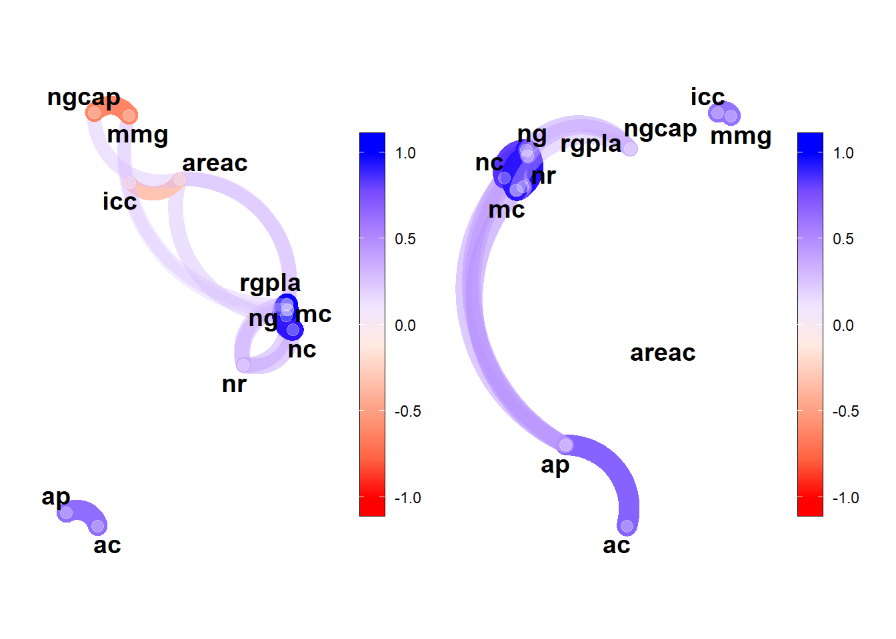
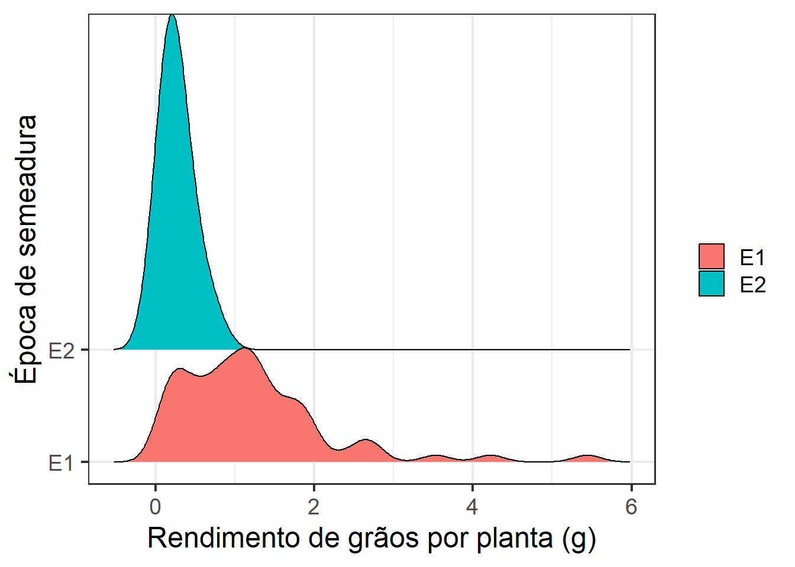
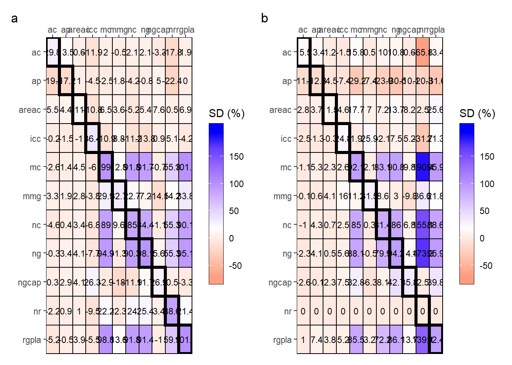

library(rio)
library(tidyverse)
library(metan)
gdi <- function(dfrc,
gen,
vars = NULL,
si = 0.2,
ideotype = NULL){
if(missing(vars)){
gen <- dfrc |> select({{gen}})
vars <- dfrc |> select_numeric_cols()
dfrc <- bind_cols(gen, vars)
} else{
gen <- dfrc |> select({{gen}})
vars <- dfrc |> select({{vars}})
dfrc <- bind_cols(gen, vars)
}
mger <- dfrc |> mean_by()
dfrc_num <- dfrc |> select_numeric_cols()
nvars <- ncol(dfrc_num)
ngen <- nrow(dfrc_num)
varn <- colnames(dfrc_num)
ifelse(is.null(ideotype),
ideotype <- rep("h", nvars),
ideotype <- ideotype)
results <- data.frame(matrix(NA, nvars, nvars))
results_perc <- data.frame(matrix(NA, nvars, nvars))
ngensel <- ceiling(ngen * si)
selgen <- list()
# selecao direta e indireta
for (i in 1:nvars){
if(ideotype[i] == "h"){
msel <-
dfrc |>
slice_max(dfrc_num[, i], n = ngensel)
selgen[[i]] <- msel |> pull(1)
msel <- msel |> mean_by()
results[i, ] <- msel - mger
results_perc[i, ] <- (msel - mger) / mger * 100
} else{
msel <-
dfrc |>
slice_min(dfrc_num[, i], n = ngensel) |>
mean_by()
selgen[[i]] <- msel |> pull(1)
msel <- msel |> mean_by()
results[i, ] <- msel - mger
results_perc[i, ] <- (msel - mger) / mger * 100
}
}
colnames(results) <- rownames(results) <- varn
colnames(results_perc) <- rownames(results_perc) <- varn
print(selgen)
names(selgen) <- varn
return(list(results = results,
results_perc = results_perc,
selgen = selgen))
}
######## plotar os valores
plot_gdi <- function(model,
type = c("percent", "absolut"),
range_scale = NULL){
type <- type[1]
if(type == "percent"){
df_plot <-
model$results_perc |>
make_long()
} else{
df_plot <-
model$results |>
make_long()
}
fcts <- as.character(unique(factor(df_plot$ENV)))
df_plot <-
df_plot %>%
mutate(lwid = ifelse((ENV == GEN), 1.5, 0.5)) %>%
mutate(ENV = factor(as.factor(ENV), levels = c(fcts, "linear"))) %>%
mutate(GEN = factor(as.factor(GEN), levels = rev(fcts))) %>%
arrange(lwid)
ifelse(is.null(range_scale),
rang <- range(df_plot$Y),
rang <- range_scale)
ggplot(df_plot, aes(ENV, GEN, fill = Y)) +
geom_tile(color = "black",
linewidth = df_plot$lwid) +
scale_fill_gradient2(low = "red",
high = "blue",
mid = "white",
midpoint = mean(df_plot$Y),
limit = rang,
space = "Lab",
na.value = "transparent") +
geom_text(aes(label = round(Y, 1)),
color = "black",
size = 3) +
guides(fill = guide_colourbar(label = TRUE,
draw.ulim = TRUE,
draw.llim = TRUE,
frame.colour = "black",
ticks = TRUE,
nbin = 10,
label.position = "right",
barwidth = 1,
barheight = 11,
direction = 'vertical')) +
scale_y_discrete(expand = expansion(mult = c(0,0))) +
scale_x_discrete(position = "top",
expand = expansion(0)) +
labs(x = NULL,
y = NULL,
fill = "SD (%)")
}02: Diferencial de seleção direto e indireto visando seleção de genótipos de linho
1 Pacotes
2 Dados
df <-
import("data/data_mgidi.csv") |>
remove_rows_na() |>
filter(epoca %in% c("E1", "E4")) |>
replace_string(epoca, pattern = "E4", replacement = "E2")
# por época
dfe <-
df |>
split_factors(epoca)3 Correlação parcial
# correlação parcial
res_part <- lapply(dfe, corr_coef)
p1 <- network_plot(res_part$E1)
p2 <- network_plot(res_part$E2)
arrange_ggplot(p1, p2)
ggsave("figs/corr_linear.jpg",
width = 10,
height = 6)4 Histogram
library(ggridges)
ggplot(df, aes(rgpla, y = epoca)) +
geom_density_ridges(aes(fill = epoca),
scale = 3) +
theme_bw() +
scale_y_discrete(expand = expansion(c(0.2, 0.2))) +
theme_bw(base_size = 18) +
theme(legend.position = "bottom")+
labs(fill = "",
x = "Rendimento de grãos por planta (g)",
y = "Época de semeadura")
ggsave("figs/density_gy.jpg",
width = 6,
height = 6)5 Diferencial de seleção
# diferencial de seleção por época
res_epoca <- lapply(dfe, gdi, gen,
si = 0.25,
ideotype = c("l", rep("h", 10)))
## [[1]]
## [1] 67.52632
##
## [[2]]
## [1] "G46" "G44" "G30" "G9" "G26" "G49" "G10" "G17" "G27" "G34" "G35" "G48"
## [13] "G32" "G14" "G4" "G41" "G51"
##
## [[3]]
## [1] "G228" "G4" "G48" "G13" "G36" "G233" "G29" "G41" "G230" "G222"
## [11] "G216" "G9" "G28" "G31" "G3" "G226" "G19" "G20" "G33"
##
## [[4]]
## [1] "G228" "G4" "G48" "G13" "G233" "G36" "G31" "G222" "G41" "G230"
## [11] "G29" "G3" "G9" "G33" "G223" "G216" "G14"
##
## [[5]]
## [1] "G222" "G31" "G228" "G219" "G30" "G9" "G10" "G17" "G15" "G5"
## [11] "G45" "G223" "G28" "G235" "G8" "G47" "G224"
##
## [[6]]
## [1] "G230" "G29" "G38" "G41" "G47" "G215" "G219" "G222" "G228" "G232"
## [11] "G233" "G10" "G13" "G14" "G16" "G19" "G20" "G27" "G33" "G35"
## [21] "G36" "G40" "G49" "G216" "G218" "G225" "G226" "G235"
##
## [[7]]
## [1] "G228" "G4" "G48" "G13" "G36" "G222" "G29" "G41" "G230" "G233"
## [11] "G216" "G9" "G28" "G3" "G31" "G10" "G20"
##
## [[8]]
## [1] "G228" "G4" "G48" "G13" "G36" "G222" "G29" "G9" "G233" "G41"
## [11] "G28" "G3" "G216" "G31" "G230" "G20" "G215"
##
## [[9]]
## [1] "G234" "G27" "G22" "G44" "G5" "G9" "G215" "G20" "G46" "G232"
## [11] "G29" "G19" "G39" "G40" "G16" "G3" "G1"
##
## [[10]]
## [1] "G35" "G31" "G235" "G5" "G2" "G229" "G225" "G228" "G224" "G222"
## [11] "G234" "G223" "G3" "G39" "G33" "G40" "G44"
##
## [[11]]
## [1] "G28" "G27" "G50" "G21" "G20" "G29" "G30" "G215" "G19" "G48"
## [11] "G22" "G9" "G23" "G216" "G222" "G46" "G10"
##
## [[1]]
## [1] 60.53333
##
## [[2]]
## [1] "G193" "G170" "G160" "G166" "G169" "G181" "G167" "G161" "G178" "G180"
## [11] "G183" "G207" "G164" "G201"
##
## [[3]]
## [1] "G205" "G177" "G206" "G161" "G195" "G196" "G170" "G188" "G201" "G197"
## [11] "G175" "G167" "G200" "G203" "G211"
##
## [[4]]
## [1] "G177" "G206" "G170" "G195" "G205" "G161" "G200" "G197" "G196" "G203"
## [11] "G175" "G163" "G174" "G201"
##
## [[5]]
## [1] "G165" "G167" "G192" "G160" "G169" "G168" "G200" "G191" "G190" "G195"
## [11] "G161" "G179" "G188" "G163"
##
## [[6]]
## [1] "G205" "G162" "G163" "G177" "G188" "G196" "G197" "G206" "G161" "G164"
## [11] "G175" "G185" "G190" "G160" "G165" "G166" "G167" "G168" "G169" "G170"
## [21] "G171" "G172" "G173" "G174" "G176" "G178" "G179" "G180" "G181" "G182"
## [31] "G183" "G184" "G186" "G187" "G189" "G191" "G192" "G193" "G194" "G195"
## [41] "G198" "G199" "G200" "G201" "G202" "G203" "G204" "G207" "G208" "G209"
## [51] "G210" "G211" "G212" "G213" "G214"
##
## [[7]]
## [1] "G177" "G206" "G170" "G195" "G205" "G161" "G196" "G197" "G200" "G167"
## [11] "G203" "G163" "G201" "G188"
##
## [[8]]
## [1] "G177" "G195" "G161" "G206" "G170" "G205" "G197" "G200" "G196" "G203"
## [11] "G163" "G167" "G160" "G169" "G174"
##
## [[9]]
## [1] "G189" "G161" "G192" "G202" "G185" "G180" "G174" "G183" "G200" "G191"
## [11] "G197" "G195" "G178" "G210"
##
## [[10]]
## [1] "G192" "G170" "G204" "G200" "G195" "G194" "G163" "G184" "G214" "G168"
## [11] "G197" "G183" "G203" "G177"
##
## [[11]]
## [1] "G189" "G210" "G180" "G165" "G202" "G160" "G196" "G161" "G197" "G185"
## [11] "G191" "G167" "G195" "G188"
g1 <- plot_gdi(res_epoca$E1, range_scale = c(-70, 195))
g2 <- plot_gdi(res_epoca$E2, range_scale = c(-70, 195))
arrange_ggplot(g1, g2,
tag_levels = "a")
ggsave("figs/direct_indirect_sd.jpg",
width = 10,
height = 5)
bind <-
rbind_fill_id(res_epoca$E1$results |> rownames_to_column("var"),
res_epoca$E2$results |> rownames_to_column("var"),
.id = "epoca")
# export(bind, "data/sd_absoluto.xlsx")6 Section info
sessionInfo()
## R version 4.2.2 (2022-10-31 ucrt)
## Platform: x86_64-w64-mingw32/x64 (64-bit)
## Running under: Windows 10 x64 (build 22621)
##
## Matrix products: default
##
## locale:
## [1] LC_COLLATE=Portuguese_Brazil.utf8 LC_CTYPE=Portuguese_Brazil.utf8
## [3] LC_MONETARY=Portuguese_Brazil.utf8 LC_NUMERIC=C
## [5] LC_TIME=Portuguese_Brazil.utf8
##
## attached base packages:
## [1] stats graphics grDevices utils datasets methods base
##
## other attached packages:
## [1] ggridges_0.5.4 metan_1.18.0 lubridate_1.9.2 forcats_1.0.0
## [5] stringr_1.5.0 dplyr_1.1.1 purrr_1.0.1 readr_2.1.4
## [9] tidyr_1.3.0 tibble_3.2.1 ggplot2_3.4.1 tidyverse_2.0.0
## [13] rio_0.5.29
##
## loaded via a namespace (and not attached):
## [1] jsonlite_1.8.4 splines_4.2.2 cellranger_1.1.0
## [4] yaml_2.3.7 ggrepel_0.9.3 numDeriv_2016.8-1.1
## [7] pillar_1.9.0 lattice_0.20-45 glue_1.6.2
## [10] digest_0.6.31 RColorBrewer_1.1-3 polyclip_1.10-4
## [13] minqa_1.2.5 colorspace_2.1-0 htmltools_0.5.5
## [16] Matrix_1.5-3 plyr_1.8.8 pkgconfig_2.0.3
## [19] haven_2.5.2 patchwork_1.1.2 scales_1.2.1
## [22] tweenr_2.0.2 openxlsx_4.2.5.2 tzdb_0.3.0
## [25] lme4_1.1-32 ggforce_0.4.1 timechange_0.2.0
## [28] generics_0.1.3 farver_2.1.1 withr_2.5.0
## [31] cli_3.6.1 magrittr_2.0.3 readxl_1.4.2
## [34] evaluate_0.20 GGally_2.1.2 fansi_1.0.4
## [37] nlme_3.1-160 MASS_7.3-58.3 foreign_0.8-83
## [40] textshaping_0.3.6 tools_4.2.2 data.table_1.14.8
## [43] hms_1.1.3 lifecycle_1.0.3 munsell_0.5.0
## [46] zip_2.2.2 compiler_4.2.2 systemfonts_1.0.4
## [49] rlang_1.1.0 grid_4.2.2 nloptr_2.0.3
## [52] rstudioapi_0.14 htmlwidgets_1.6.2 labeling_0.4.2
## [55] rmarkdown_2.20 boot_1.3-28 gtable_0.3.3
## [58] lmerTest_3.1-3 reshape_0.8.9 curl_5.0.0
## [61] R6_2.5.1 knitr_1.42 fastmap_1.1.1
## [64] utf8_1.2.3 mathjaxr_1.6-0 ragg_1.2.5
## [67] stringi_1.7.12 Rcpp_1.0.10 vctrs_0.6.1
## [70] tidyselect_1.2.0 xfun_0.37